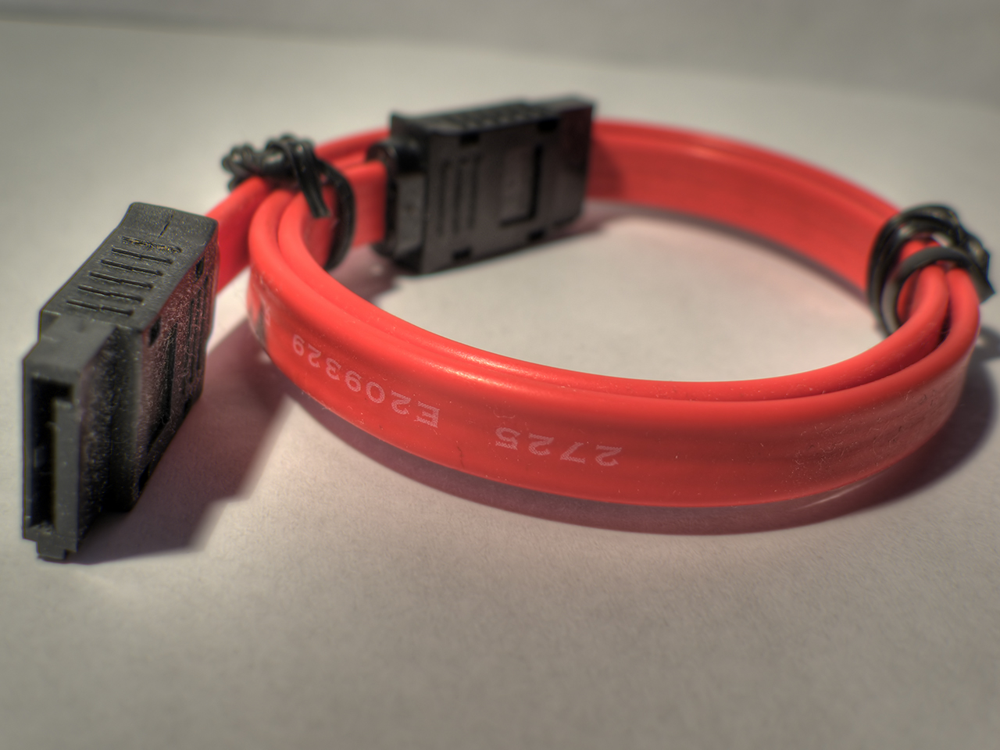

With the proper tools, a hard drive can be installed
in a couple of minutes
- First put the hard drive into the proper
drive bay inside your case. Sometimes this is trick as they made
a tight fit, but put it in so that the holes line up for the screws.
- Add any additional drives, including any CD-ROM you may
want to include. Make sure everything fits and you know where you
want everything to go.
- Now you may need to remove the other drives in order
to install them one-by-one.
- Once the holes are aligned, screw in enough so the drive
will be secure. Do not use long screws. You do not want to damage
the inside of the drive.

- Put each drive in and secure it with screws one at a
time until done. Some types of drives require a power supply separate
from the SATA and some use power from the SATA cable itself. If
a hard drive or CD-ROM has a power input, run a power cable from
your motherboard and plug it into the drive. Also, if your motherboard
does not support SATA, you may need an adapter for SATA drives.
- For each one, take the SATA cable (which probably came
with the drive), and connect one end to the motherboard and the
other end to the drive.